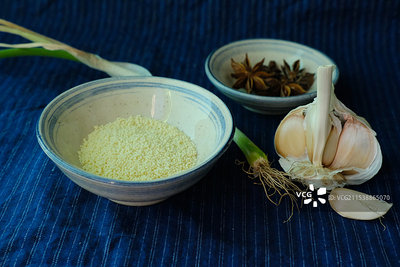
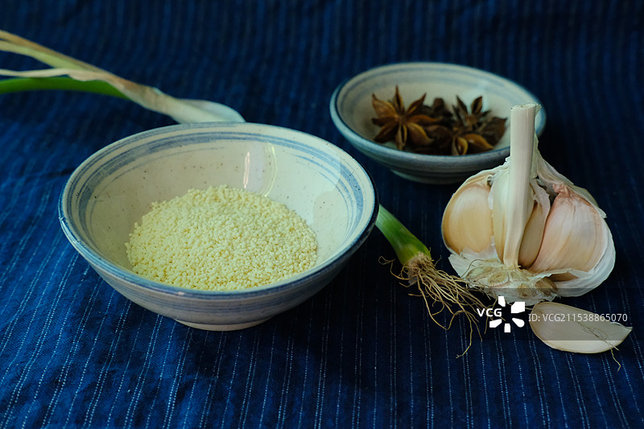
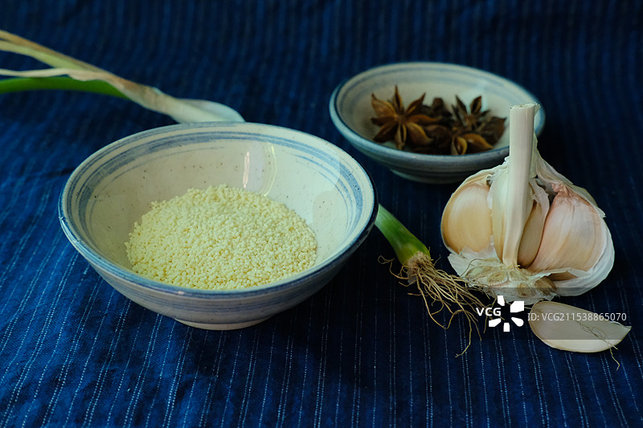

鱼生，又称生鱼片，古称“脍”，是中国传统美食之一。
其历史可追溯至千年之前，最早见于《周礼》与《礼记》。
在广东顺德，鱼生被称为“风生水起”的象征，寓意生活兴旺、事业顺遂，是节庆与宴席上的经典佳肴。
此外，鱼生在新加坡等地也有深厚的文化背景，尤其在农历新年期间，人们会在正月初七“捞鱼生”，寓意“风生水起，年年有余”。
鱼的选择：传统上多用淡水鱼（如鲩鱼、草鱼），但现代多选用海鲈鱼或海皖鱼，因其肉质紧实、鲜甜。
配料：姜丝、蒜片、柠檬叶丝、酸荞头、辣椒丝、花生碎、芝麻、香菜等。
调料：盐、糖、生抽、醋、花生油、芥末等。

选鱼与处理：
选择新鲜的鱼，提前饿养几天，排出杂质和泥沙。
将鱼敲晕，从鱼尾和鱼头处割一刀放血，使鱼肉洁白。
去鳞、去内脏、去骨，将鱼肉切成薄片，厚度约0.5毫米。
配料准备：
将配料切成细丝，如姜丝、柠檬叶丝、胡萝卜丝等。
摆盘与调味：
将鱼片铺在冰盘上，撒上配料。
加入适量的盐、糖、生抽、醋、花生油等调料，搅拌均匀。
食用：
用筷子夹取鱼片和配料，放入碗中，拌匀后即可食用。
鱼的新鲜度：选择新鲜的鱼，避免使用冷冻鱼。
刀工要求：鱼片需薄如蝉翼，厚度均匀，以保证口感。
卫生安全：处理鱼肉时需注意卫生，避免细菌滋生。
配料搭配：配料需切成细丝，以便更好地与鱼片交融。
食用顺序：在冬季，先放鱼肉再放配料；夏季则先拌配料再放鱼肉。